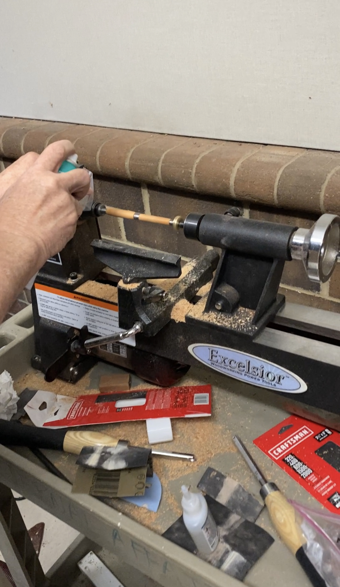
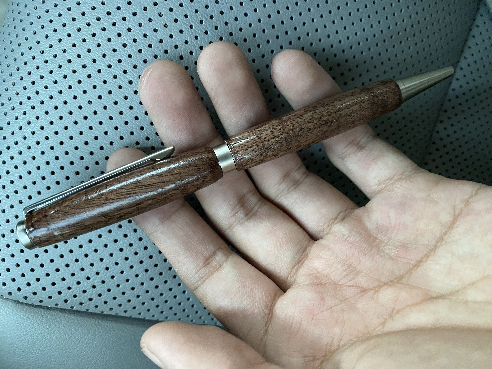
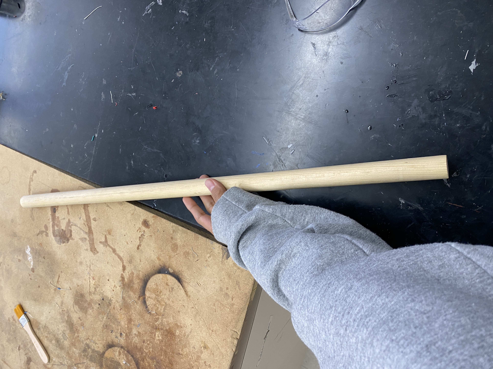
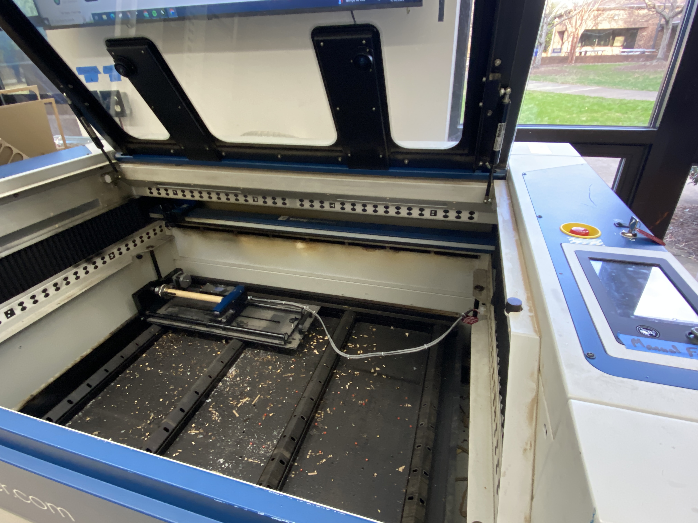
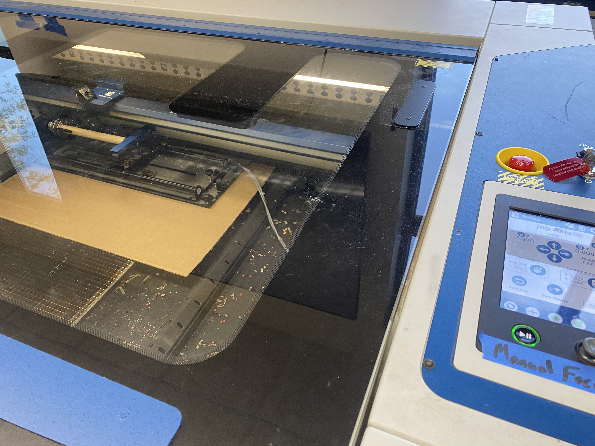
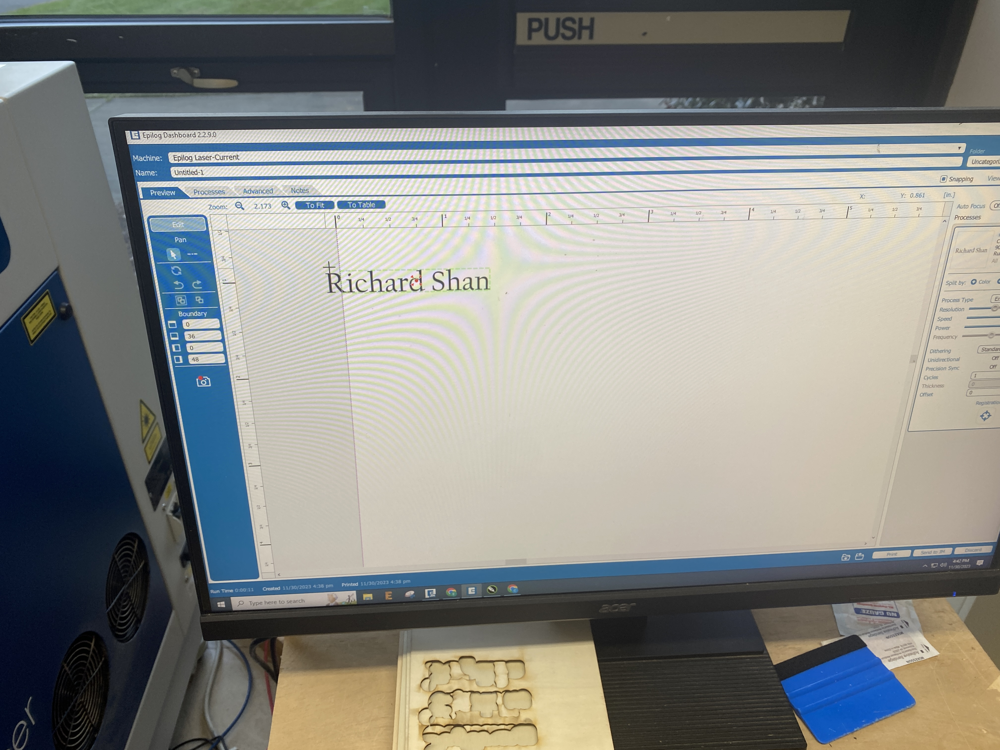
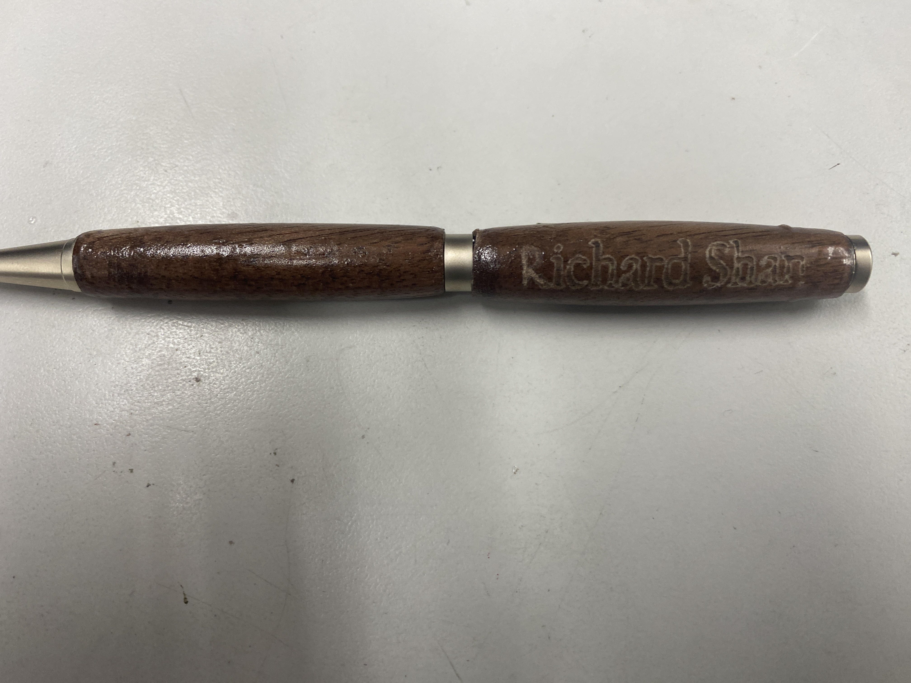

Pen Turning
For my first woodworking project during Fab, I turned a pen from a kit containing 2 copper tubes, an ink cartridge, and a pen tip and cap. We were each given a bit of wood which we cut into the body of the pen. We then assembled the parts together. This was also my first time turning a pen so there were a few mishaps but overall, my final product turned out well!
Materials
The materials used were all from the kit, with the exception of the wood and tools which came from the lab.
- 2 Copper Tubes
- 1 Ink Cartridge
- Pen Cap
- Pen Tip
- Pen Clip
- Lathe Machine
- Crusher
- Rotary Machine
- Laser Cutter
Pen Turning
With the help of my instructor, I first cut the wood into rectangular prisms.
 |
Next, I then used the lathe to drill a cylindrical hole inside the wood.

I then sanded the copper tubes which would hold the pen cartridge in order to rough them up a bit to give it more surface area when gluing. I then glued the tubes into the previously drilled hole inside the wood.
 |
 |
I then put the wood blocks on the lathe, pushing the rod through the copper tubes glued inside the wood. Then I used different tipped tools to chip away parts of the wood, first chipping away large chunks and eventually using a finer tipped tool to make small modifications.
After cutting the wood down to a thin cylindrical shape, I used sandpaper to smooth out the surface, starting with very rough sandpaper to remove some material and flatten the surface then using finer and finer grade sandpaper to create a very smooth surface.
After sanding the wood into a smooth surface, I applied a light spray of glue and accelerant as a final coating.

I then used the crusher to push the pen tip, clip, and cap together with the wood body and copper cores.

Here is what the pen looks like after finishing assembly:

Pen Rotary Engraving
We used the rotary machine to engrave a cylindrical object inside the laser cutter. This was my first time using the rotary machine (along with my classmates and my instructor), so we spent a lot of time reading the manufacturer's instructions and figuring out the software.
I first cut a cylinder of wood to use as a test for the rotary machine and to figure out how it works.
|  |
I then put the wood cylinder into the rotary machine inside of the laser cutter and did a trial print.
|  |  |
After successfully completing the test run, I then put my pen into the rotary machine and ran an engraving on it.
However, I didn't realize that when importing the file to print, part of the text that was supposed to be engraved was actually off the page.

Because I didn't realize this until after taking the pen out of the laser cutter and seeing the botched print, I was stuck with a pen that was emblazoned with "ichard Shan", but as I didn't want to be stuck with an ugly pen I decided to use an exacto-knife to manually engrave the "R" at the start.
